The big idea
The thesis begins with a place problem: suburban strip commercial centers are often difficult to read, visually disengaging, and dominated by buildings and parking lots that do little to define shared public space. The proposal treats those conditions as a design opportunity. Instead of abandoning existing centers for new greenfield development, it concentrates new growth within them through adaptable infill prototypes.
Make suburban centers legible and engaging
Use focal points, connected places, common edges, and defined public space to replace the jumbled quality of the strip with a more comprehensible order.
Concentrate growth inside the existing metropolis
Increase density in established suburban centers rather than relying only on outward expansion, while preserving the suburban ideal of combining town and landscape.
Work with the repeatability of the strip mall
Because strip centers are assembled from recurring parcel and building types, redevelopment can be approached through a reusable family of infill patterns rather than one site-specific master plan.
Test form against real constraints
Patterns are filtered against context, access, parking, and use so that formal ideas survive only when they can also support the practical demands of redevelopment.
Turn a repeating suburban type into a design system
The thesis describes strip commercial centers as modular landscapes: independently owned parcels repeat along arterials, and strip malls themselves follow familiar arrangements of anchor stores, smaller shops, setbacks, and large surface parking lots. That regularity becomes the basis for a systematic design method. Five formal themes — edge, agora, village, layer, and wrap — organize different ways of placing new building mass around an existing strip mall.
Test the patterns instead of selecting them by preference
The design process uses sequential matrices. A formal pattern is first compared with contextual conditions, then with access requirements, parking requirements, and finally the ability to support a useful mix of housing, retail, office, anchor retail, and public space. Patterns judged improbable are removed at each stage; the remaining patterns become the candidate prototypes.
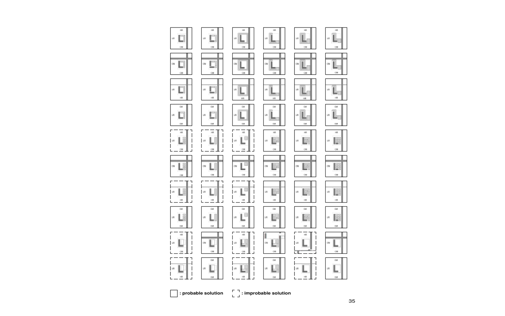
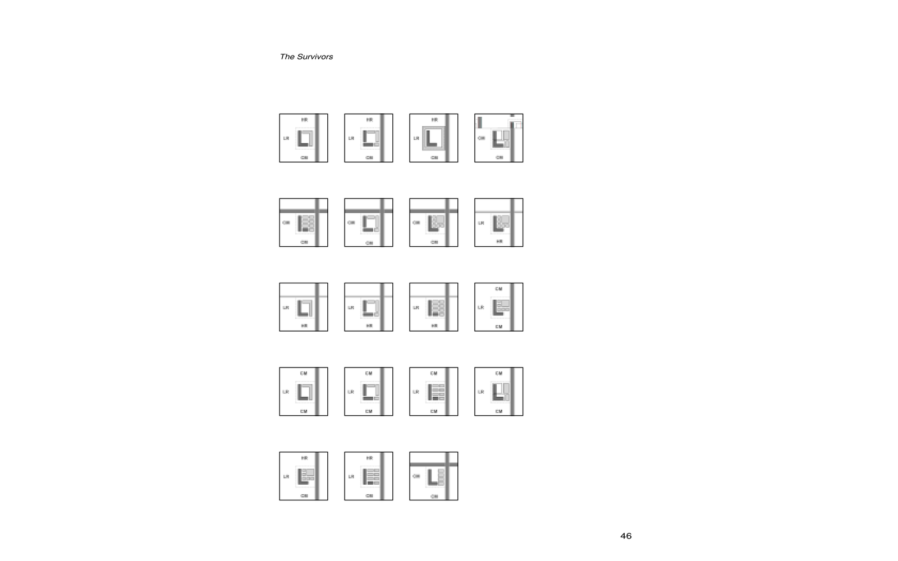
Apply the system to an actual suburban center
Annandale, Virginia, provides the thesis test case. The existing center contains the loose figure-ground, independently developed parcels, and multiple strip malls typical of suburban commercial corridors. The prototype application adds new building fabric around existing commercial structures and organizes redevelopment into a more continuous network of streets, blocks, and centers.
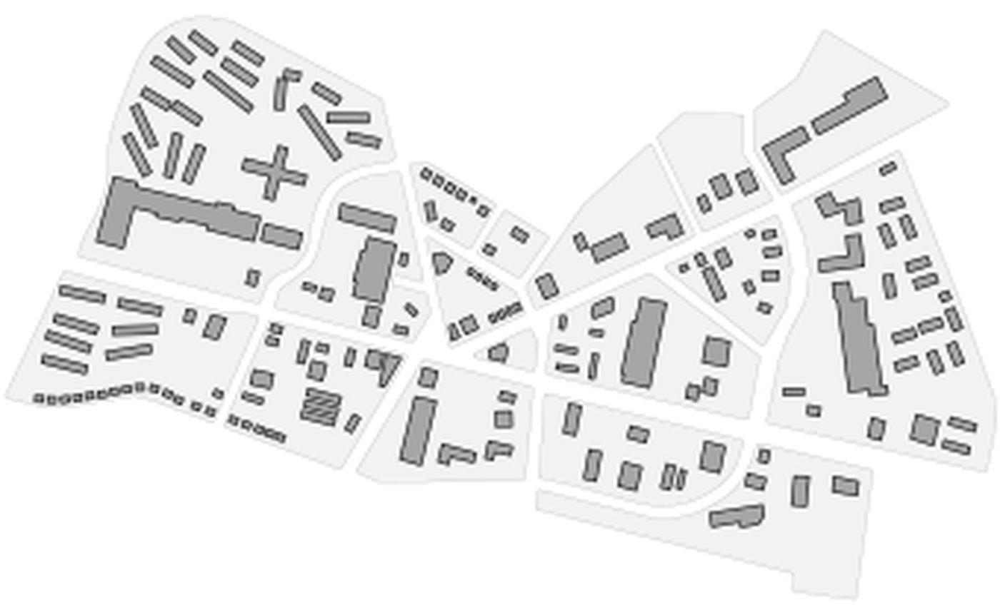
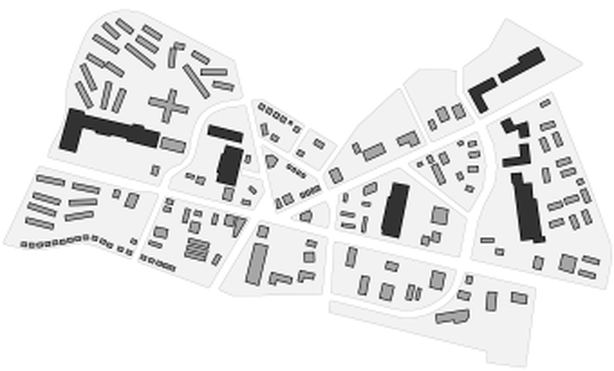
Use infill to create structure and public space
The proposed plan does not simply increase floor area. New development is used to define edges, complete blocks, connect separate places, and make room for a new public green-space system. The figure-ground comparison shows the intended shift from isolated objects in open parking fields toward a denser and more continuous urban fabric.
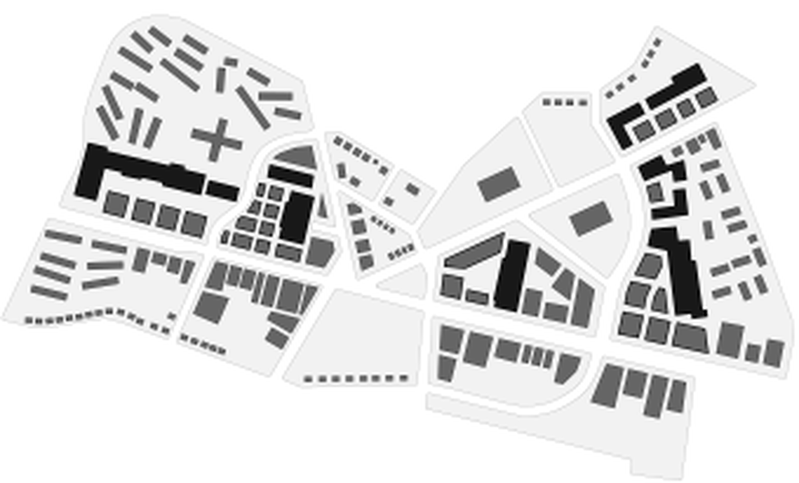
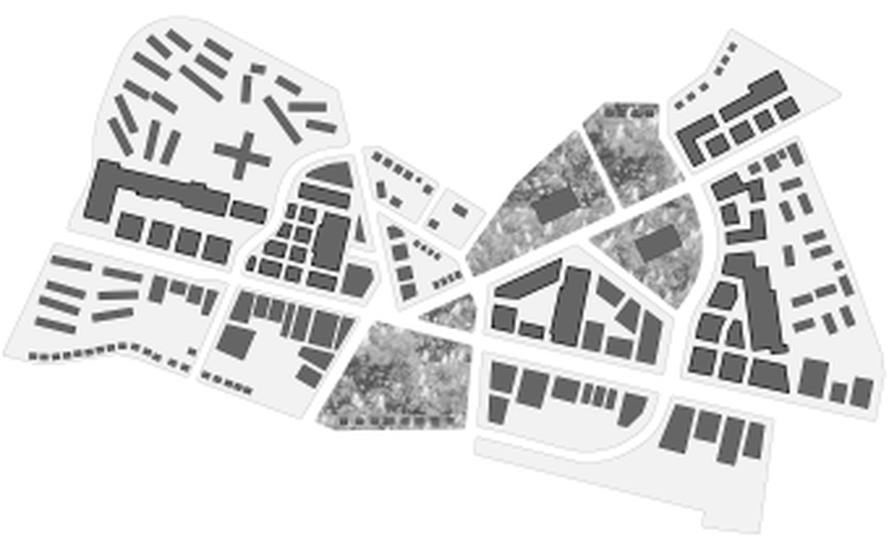
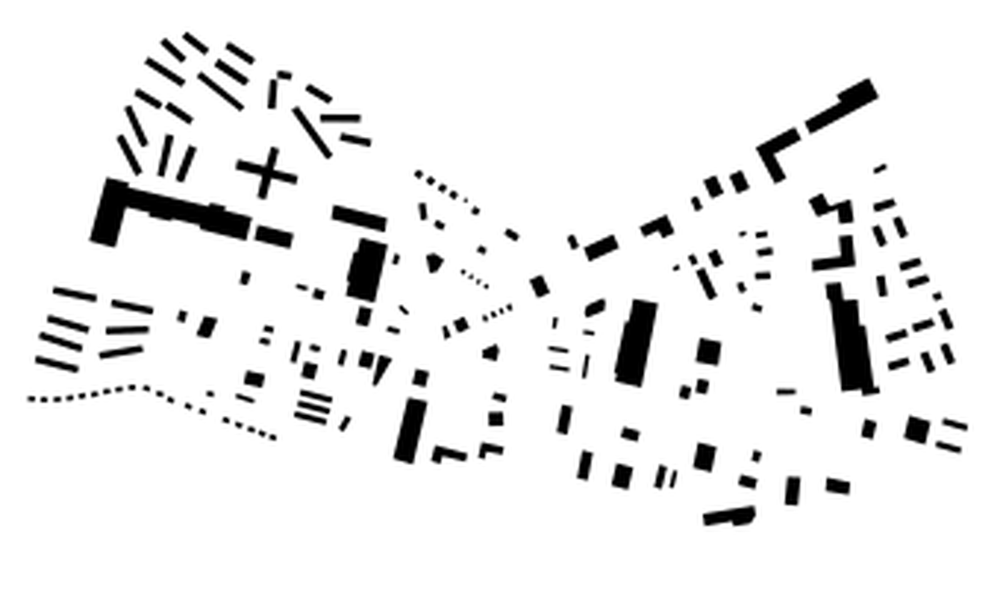
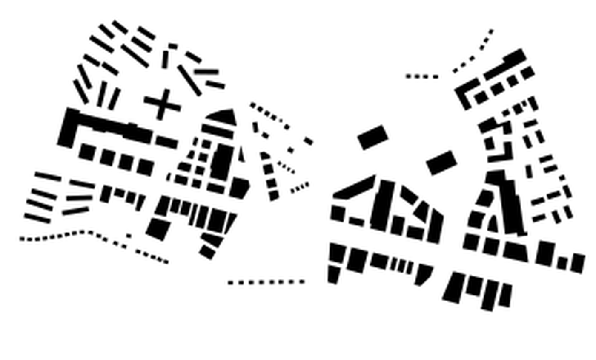
Translate prototype logic into built form
The Annandale application also tests how the formal families might read architecturally. The model studies show the larger transformation of the center, while the elevation studies compare an edge / city approach with an agora / complex approach to the redevelopment of an existing strip mall.
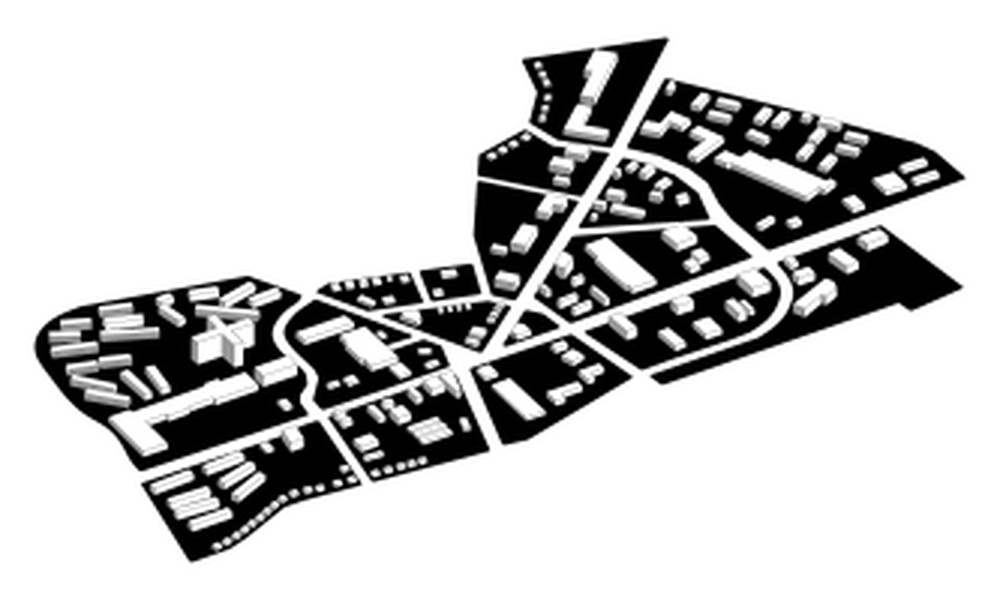
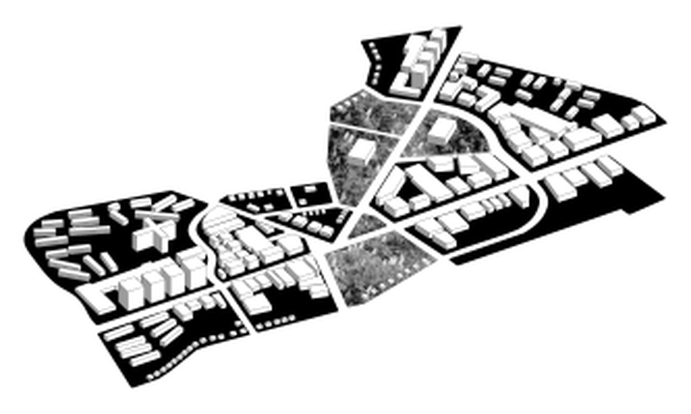
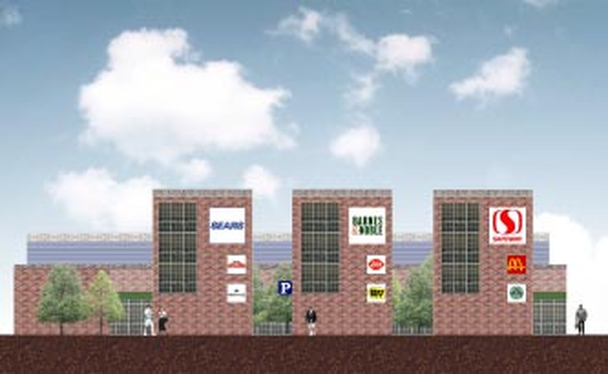
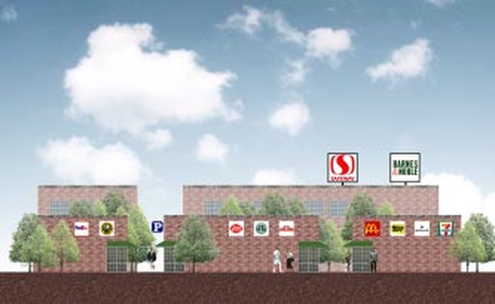
A framework for design decisions, not a single final form
The thesis ends by treating the prototype method itself as an open research question. The sequence of the tests can affect which patterns survive, and the criteria used in those tests are equally important. The method therefore depends on continually refining the rules and grounding them in more than formal preference: statistical and market analysis should be combined with design and aesthetic objectives. The value of the work is less a single final master plan than a repeatable way to connect urban form, practical constraints, and incremental redevelopment.